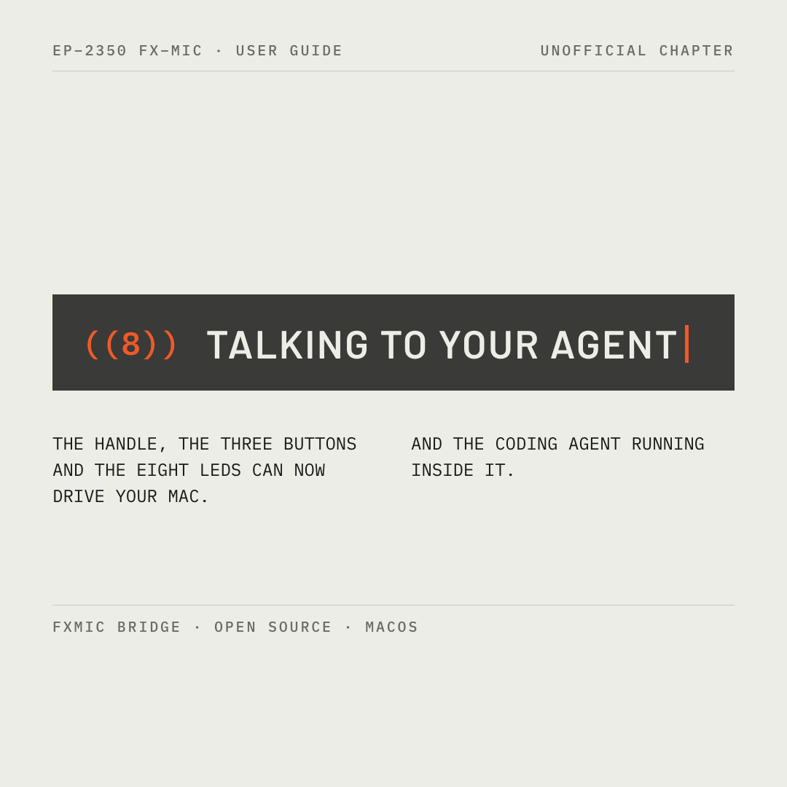
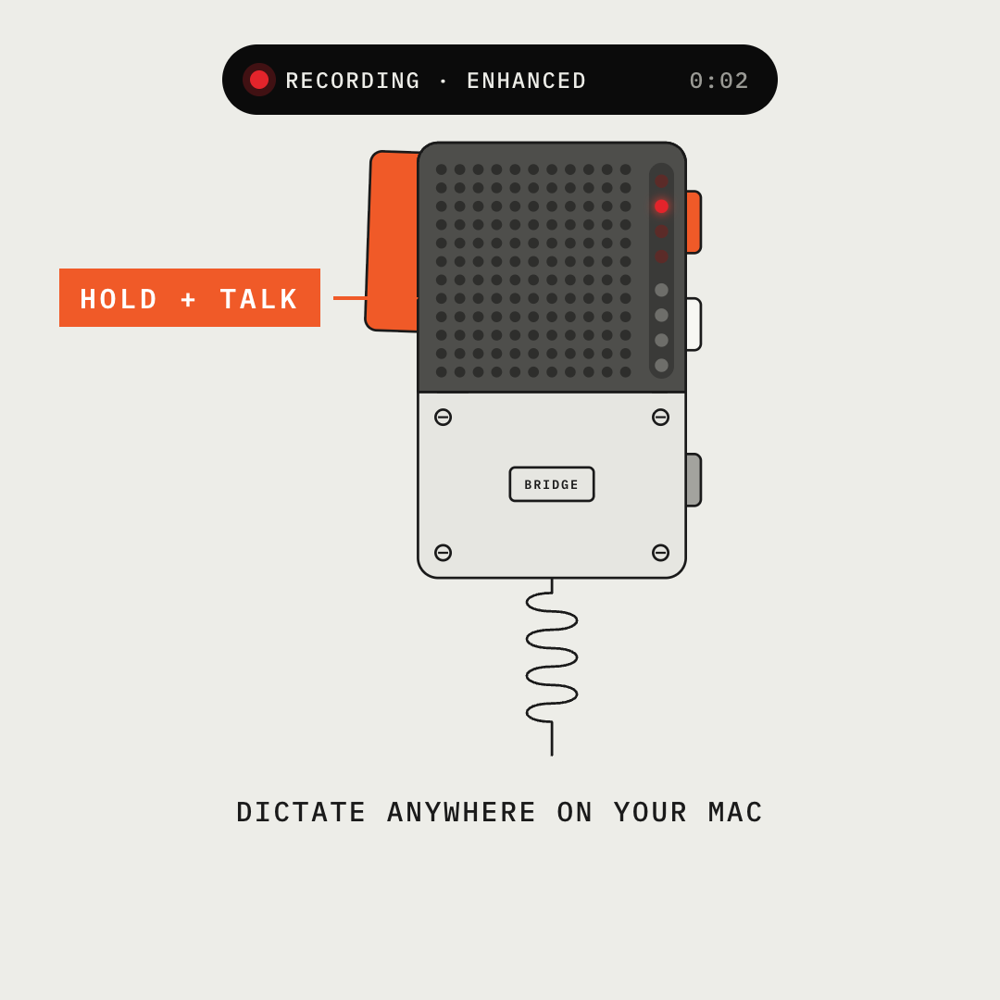
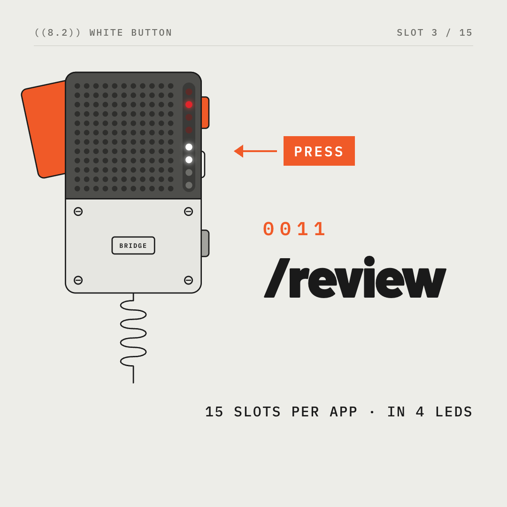
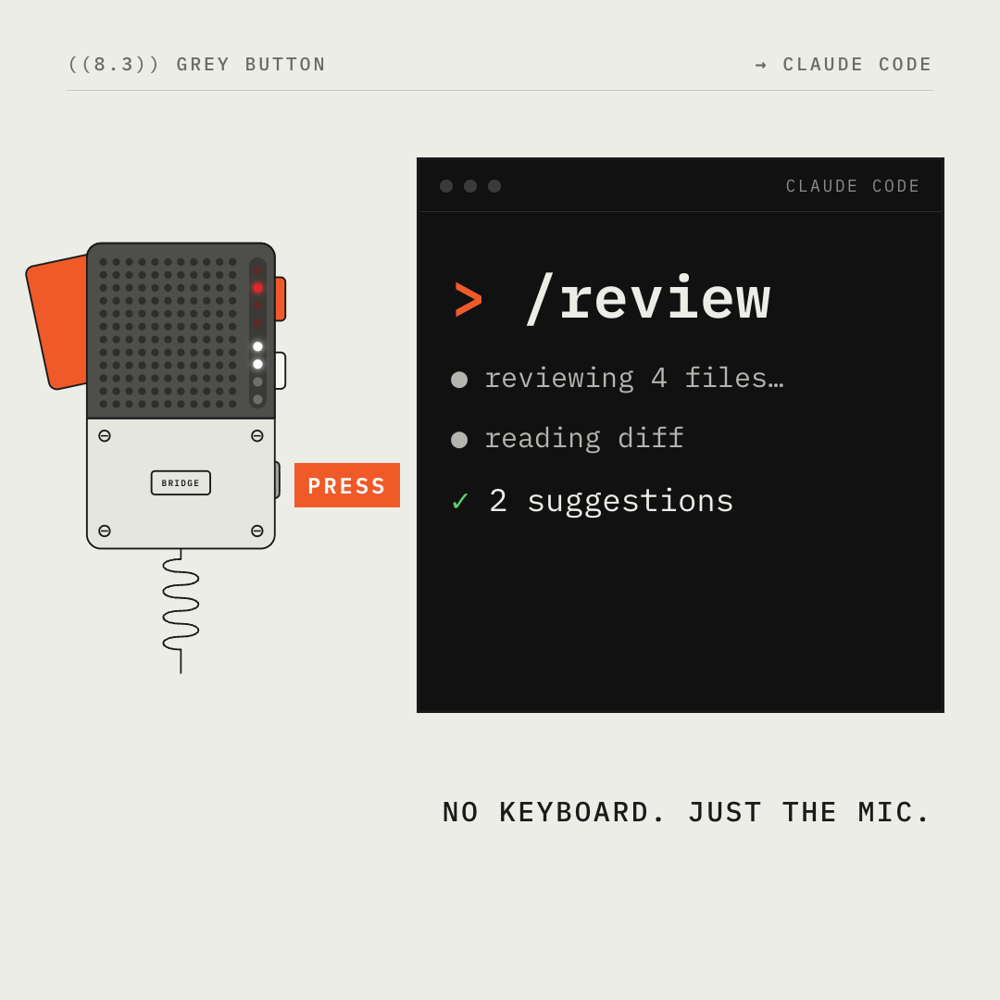
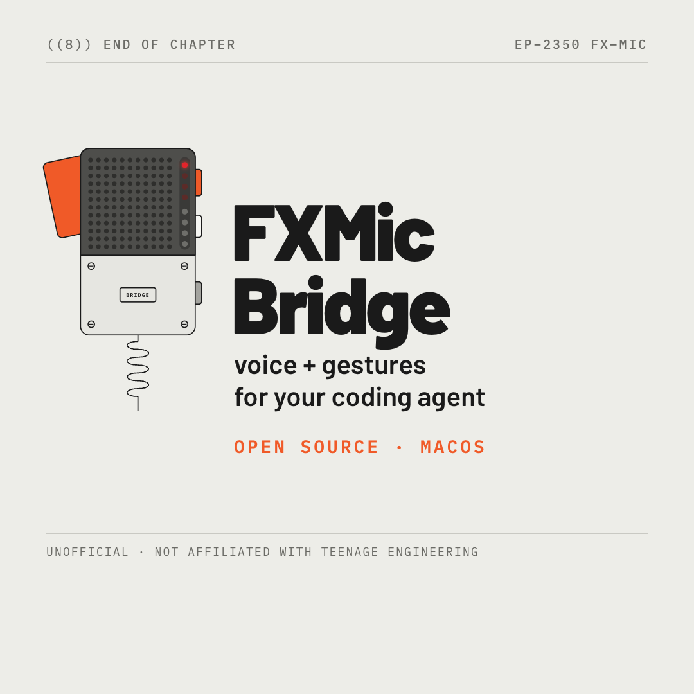

01: ((8)) talking to your agent
0.0 to 3.0s
A guide-style chapter bar types the title on the paper page; two columns of manual copy, unofficial chapter kicker.

02: Hold the handle. Talk.
3.0 to 7.0s
The redrawn mic; HOLD + TALK callout on the handle, red LEDs sweep (KITT), recording pill on top.

03: Pick a skill
7.0 to 10.5s
PRESS on the white button; white LEDs count in binary while the slot swaps /compact → /clear → /review.

04: Send it to the agent
10.5 to 15.0s
PRESS on the grey button; the terminal receives /review and Claude Code works to "✓ 2 suggestions".

05: FXMic Bridge
15.0 to 18.5s
Wordmark, tagline, open source · macOS, and the unofficial line. Holds for a clean loop.